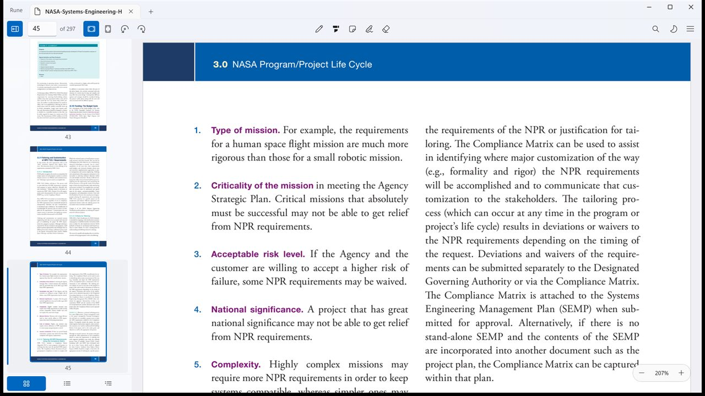
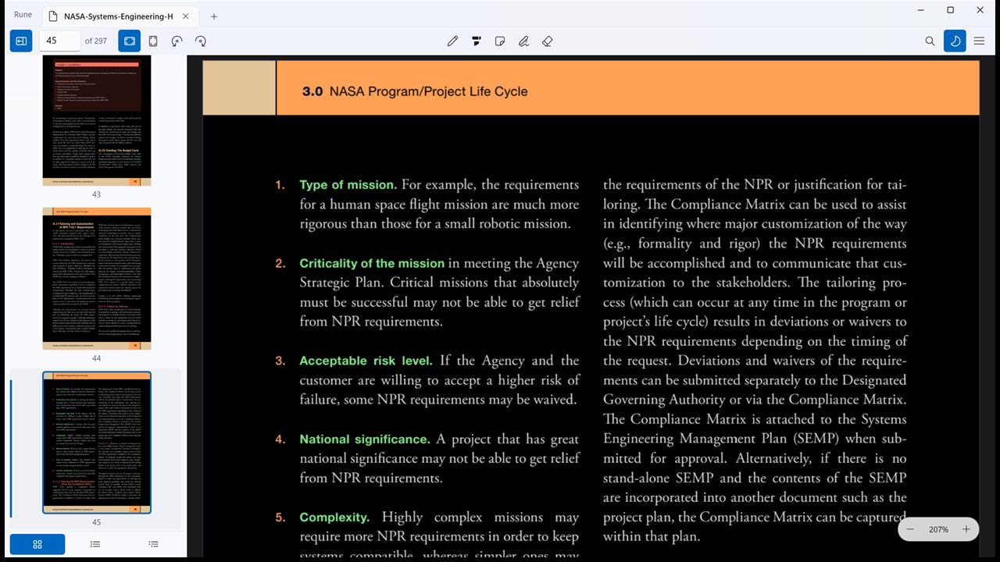
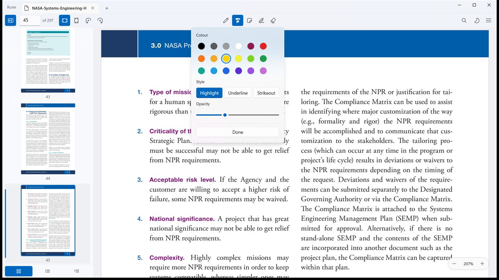
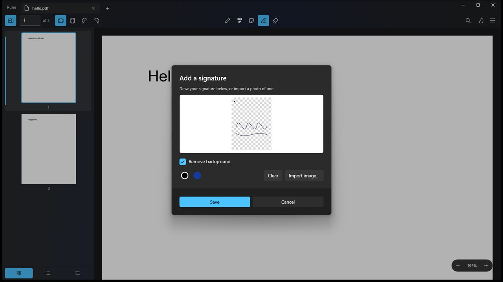
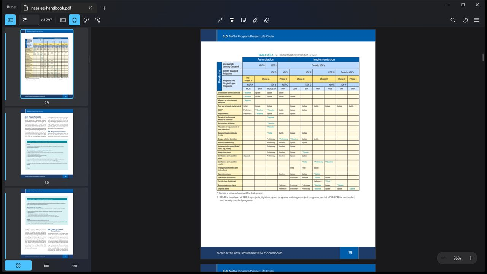

A PDF reader that keeps up with you
The speed of SumatraPDF, the look of GNOME Papers, built natively for Windows 11. Free, open source, and it never phones home.
Free and GPLv3. Windows 10 1809 and later, x64 and ARM64.

Windows never had all three at once
SumatraPDF is legendary for speed but wears a 2009 interface. Edge and Acrobat are heavy. Okular's Windows port never quite feels native. Rune is an attempt at fast, light and modern together.
Fast on big documents
Continuous virtualized scrolling with tiled progressive rendering: a quick blurry pass, then a crisp one. A 1,000-page file stays smooth while you scroll and search it at the same time.
Native Windows 11
WinUI 3 with Mica, dark mode and tabs in the title bar. One slim header, a floating zoom pill and a big-thumbnail sidebar, laid out with GNOME Papers' proportions.
Keyboard first
A command palette, full arrow and vim navigation, and a shortcuts overlay on F1. Every action is reachable without touching the mouse.
Nothing leaves your machine
No account, no subscription, no telemetry, no ads. Rune contains no networking code at all, so there is nothing to opt out of.
Mark it up properly
Highlight, underline, strikeout, notes and freehand pen, written as standard PDF annotations any other reader can open. Sign it, type on it, drop a picture on it.
Works with a finger
On a 2-in-1 the page scrolls and pinches, holding picks out a word, and tapping a form field brings the keyboard up. Not an afterthought bolted onto a mouse app.
A closer look
Every screenshot here is the real application, not a mockup.
Night mode that actually inverts
Ctrl + I inverts page colours on the GPU, sidebar thumbnails included, so a white paper stops being a torch at midnight.

One toolbar for markup
Pen, highlighter, note, text, picture, sign and eraser sit together in the middle of the header. Pick one and its colours, size and opacity open right beneath it.

Sign without a printer
Draw a signature, type one in a real handwriting face, or photograph one on paper and let Rune key the paper out. It happens on your machine, and saved signatures stay there.

Rearrange the document itself
Multi-select pages in the sidebar, drag to reorder, delete, or cut and paste them between open tabs. Drop a PDF onto the sidebar to insert its pages, or extract a selection to a new file.

Install Rune
Free, and free of anything that follows you around.
Microsoft Store Recommended
One click, automatic updates, and it registers itself as a PDF handler. Microsoft signs the package, so there is no certificate step and nothing for SmartScreen to warn about.
Open in the Storewinget
Same Store package, same signature, from the terminal.
winget install --id 9NH37840QDM6 --source msstore --exactPortable
A zip you can run from a USB stick or a machine you cannot install
on. Extract it anywhere and run Rune.exe. No
installation, no registry.
About the portable build: it is not code-signed, so Smart App Control will block it and SmartScreen may warn on first run. It does not update itself, and it is not size-optimised, since it carries the full self-contained .NET and Windows App SDK runtimes. The Store build has none of those caveats.